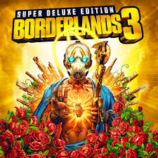
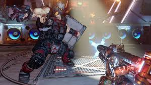

Borderlands 3 es un videojuego de disparos en primera persona con elementos de rol (FPS-RPG) desarrollado por Gearbox Software y publicado por 2K Games. Es la cuarta entrega principal de la saga Borderlands y fue lanzado el 13 de septiembre de 2019 para PlayStation 4, Xbox One y Microsoft Windows. También llegó a PlayStation 5, Xbox Series X/S y Google Stadia en versiones mejoradas.
¿De qué trata Borderlands 3?
Borderlands 3 continúa la historia de la serie en un futuro lejano, donde los jugadores toman el control de uno de los cuatro Vault Hunters (cazadores de cofres) para enfrentarse a los Calypso Twins, un par de hermanos gemelos que lideran una secta peligrosa conocida como los Children of the Vault. Estos villanos están en busca del poder absoluto, y los Vault Hunters deben detenerlos antes de que desaten un caos total sobre el universo.
Los cuatro personajes jugables en Borderlands 3 son Amara, una sirena con habilidades de combate cuerpo a cuerpo y mágicas; Moze, una experta en armas que pilota un mech llamado Iron Bear; FL4K, un cazador que tiene la capacidad de controlar animales salvajes como sus compañeros; y Zane, un ex-agente de inteligencia con una variedad de dispositivos y habilidades tácticas.
 